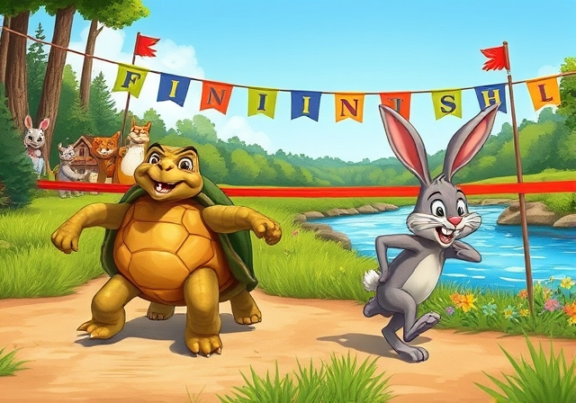

The tortoise was just a few steps away from the finish line when the rabbit woke up. Realizing he had slept for too long, the rabbit panicked and dashed toward the finish line at top speed. However, it was too late. With one final, determined step, the tortoise crossed the finish line just as the rabbit approached. The forest erupted in cheers for the tortoise. The rabbit, though embarrassed, acknowledged his defeat. From that day on, he learned to respect others and not underestimate anyone based on appearances. The moral of the story is: “Slow and steady wins the race.”